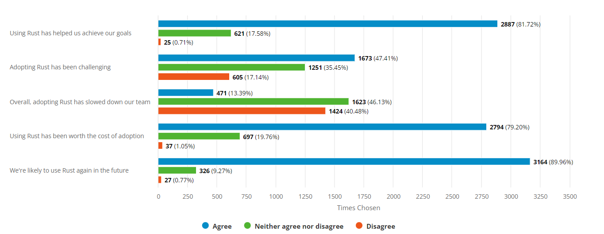

Was ist rust eigentlich?
- Programmiersprache für verschiedene Plattformen wie x86, ARM, Webassembly für den Browser
- Sprache wird kompiliert und nicht interpretiert
- Kompiler heißt
rustc, der auf LLVM basiert, GCC Frontend auch möglich - Paketmanager heißt
cargo - Bibliotheken sind in
cratesorganisiert - Weiterentwicklung wird von der Rust Foundation organsiert, Gründer waren neben Mozilla, u.a. Amazon, Google & Huawei
Ein kurze Geschichte
Es war einmal ein Browserhersteller namens Mozilla, der hatte viel C/C++ Code.
Mehrkernprozessoren wurden immer verbreiteter und paralelle Code-Ausführung wurde immer wichtiger.
Parallele Code-Ausführung für C/C++ ist aber aufwendig, kompliziert und es gilt vieles zu bedenken.
Tools gibt es zur genüge für Code-Analyse, aber viele Dinge können davon auch nicht abgefangen werden.
Menschen produzieren unvermeidlich Programmierfehler. Programme stürzen ab und verursachen Sicherheitslücken.
Um das zuvermeiden gab es keine sinnvolle Programmiersprache.
Was macht die Sprache aus?
- systemnah
- bietet ein Ausführungsgeschwindigkeiten und Optimierungen wie C/C++
- in Zukunft auch im Linux Kernel vertreten
- durch verschiedene Sprachkonstrukte wird sicherer Code produziert
- Nutzt viele Konzepte aus bereits existierenden Sprachen
- Starke Typisierung
- Abstraction by Zero Cost (
Templates,Generics)- Einführung von komplexen Abstraktionen
- Kombinationen von verschiedenen abhängigen Implementierungen
- Ausführung von nur benötigten Bestandteilen der Abstraktionen
- Funktionale Ansätze
- Jede Methode ist eine Funktion
- Map/Reduce
- Keine Objektorientiertung, stattdessen Traits und Implementierungen
- Defintion eines gemeinsamen Verhaltens
- Traits werden durch Implementierungen für Typen umgesetzt
- Pointer und Referenzen
- Explizite Deklaration von unsicheren Bereichen (
unsafe) für die Kompatiblität zu C-Implementierungen
- Implizite Speicherverwaltung
- Keine Garbage Colleciton wie
golang,JavaoderC# - Viele Operationen finden nur auf dem Stack statt
- Variablen sind bei der Deklaration standardmäßig nicht veränderlich
- Keine Garbage Colleciton wie
- Befragung für 2021

Sicherheit durch Ausdruck
- Ownership-Konzept
- Instanziierte Speicherobjekte haben zu jeder Zeit immer einen Besitzer
- Variablen wechseln den Besitzer oder müssen an dessen ausgeliehen (Borrow) werden
- Borrow-Checker
- Prüft ob der Besitz geklärt ist
- Prüft ob eine Variable verändert werden darf, d.h wird an verschiedene Stellen zeitgleich darauf zugegeriffen und gar verändert, führt dies zu einem Kompilierfehler
- dies bricht an vielen Stellen mit den gewohnten Konzepten von anderen Programmiersprachen (Singleton)
- Lifetime Checker
- Analyse des Scopes, der enthaltenen Variablen und deren Referenzen
- Die Lebenszeit von Speicherobjekten muss zu jeder Zeit bekannt sein
- Die Lebenszeit eines Speicherobjekts endet in der Regel mit dem Verlassen des Scopes
Installation
- Vollständige Installation übr rustup.rs
- Alternative kann auch der Rust Playground verwendet werden